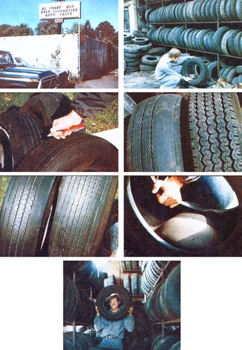

Tire companies hate people like me: I'm what's known as a "tough sell". For the past nine years, I've turned a deaf ear to every advertisement for "sale-priced tires" that I've been exposed to ... because I know how to get top-quality treads (steel-belted radials, no less) for just $5.00 to $20 apiece. And I'm not talking about retreads or baldies, either. Nope. I'm talkin' 'bout good, long-lasting tires.
How do I keep from paying a budgetbusting $40 to $70 each for new tires? Simple. All 1 do-whenever my vehicle needs new rubber-is visit a few of the larger auto "junkyards" in the area and take my pick from hundreds of choice, nearly new tires that've been removed from damaged autos. (Nearly every car in the boneyard has been crunched up in some way . . . but in almost all cases, the tires are still salvageable. This is "my kind" of automobile footwear.)
In four hours or so of "work" on a Saturday morning, I figure I can save about $100 on rubber for my Volkswagen while at the same time recycling precious petroleum products (the "rubber" now used in auto tires is mostly synthetic). You, too, should be able to save at least this much on your car's tire-related expenses ... even more, if you drive a vehicle (such as a truck or van) that requires relatively expensive treads.
Step one in finding used-tire bargains is to scan the Yellow Pages for the names and addresses of auto wrecking lots in your locale. (The best selection can generally be found in a sizable city . . . so if you live near a metropolis, check out that area's phone directory.) I always call ahead to make sure the establishment(s) in question save(s) salvageable tires. The yards that don't, of course, aren't worth my (or your) time.
Next, it's time to don some old clothes and-with a list of auto parts yards in hand, your exact tire size in mind, and a knife in your pocket-head out for the closest "tire recycling center".
When I arrive at my first hunting ground, I tell the parts broker in the front office what I'm after. He or she will then give me [1] directions to the rubber rack and [2] free rein to browse. Sometimes, an extra man will be assigned to assist me ... which is fine. It always helps to have someone pre-sort the tires into "right" and "wrong" sizes. I take care, however, to see that I-not the yard employeemake the final choice of merchandise.
Confronting 500 or 600 rubber doughnuts can be anxiety-provoking (to say the least) without a plan of action. Therefore, bear in mind that-in addition to looking for the right size rubber for your vehicleyou want to check tires for [1] the type of construction (radial or conventional-ply), [2) evenness of wear, 131 depth of tread, and [4) structural soundness. Let's consider each of these factors one by one.
TYPE OF CONSTRUCTION. Given a choice (and that's what used-tire buying is all about), I'll take steel-belted radials over conventional-ply tires any day. Radials hold the road better, have less rolling resistance (thus yielding greater fuel economy), and take twice as long to wear out as "ordinary" tires. (Of course, they're also more expensive than conventional tires when purchased new . .. but-heh, heh!--that's not a consideration here.)
The only real drawback to radials is that they can't be used-singly or in pairs-on the same vehicle with conventional-ply tires (because of their different road handling characteristics). A pair of radials on one end of your vehicle and a set of conventionals on the other will cause steering problems, particularly in crosswinds and on slippery surfaces. So: If you're shopping for more than one tire, by all means consider buying radials ... they're really superior, but be sure to mount matched sets of either biasor radial-ply tires on all four wheels of your car or truck.
EVENNESS OF WEAR. You can reject immediately any tire whose tread is cupped, dished, or bald along one edge (or in the center), no matter how good the rubber is elsewhere. Why buy an unevenly worn tire when you don't have to? I've always been able to find matching sets of nearly new tires (and/or completely new spares that have never seen pavement) after just a little searching. Chances are, you will too.
TREAD DEPTH. The more tread a tire has left, the better. Probably the quickest way to tell if a tire is worn beyond usabili. ty is to look for "wear bands". These are ridges built into and across the width of the tread at fixed intervals around the tire's circumference. When the rubber is worn down so much that the wear bands are exposed (they'll look like bald stripes across the tire), it can be said-without a doubt-that the tire has had too much wear to be put back in service.
An even more exacting check of the rubber left on a tire can be made by [1] inserting a pocketknife's blade to the bottom of the tread, [2j marking (with your thumbnail) the spot where the top of the groove meets the blade, and [3j withdrawing the knife, thumb in place. The distance from the tip of the blade to your thumbnail should be at least 3116" (or the legal minimum for your state, whichever is greater) . .. otherwise the tire is too worn to last any length of time out on the road.
STRUCTURAL SOUNDNESS. Be sure to check all prospective purchases for structural defects. First examine the tire's exterior, looking for cuts, bulges, punctures, and/or overall misshapenness (a sign of torn inner cords). Next, run your hand gingerly along the inside of the tire, feeling for the same types of damage. Finally, invert a section of the tire to have a look at the interior surface. (This "inversion" is best accomplished by pushing a portion of the hollow doughnut down onto a rock or fencepost until its concave inner surface becomes convex.) If no irregularities can be found, consider the tire "sound".
The above inspection procedures may seem long and involved, but they actually proceed quite rapidly. Many tires, for instance, quickly eliminate themselves on the basis of obvious wear or damage. Only a few make it to the final, fine-toothed comb phase of the inspection. All things considered, you should find twenty min. utes to be plenty of time in which to survey 200 or 300 treads.
Once I've made my choice(s), I roll on back to the wrecking yard's main office with two final objectives in mind: [1) pay ing the least amount of money possible, and [2] obtaining a guarantee.
Exactly how wreckers arrive at an initial price for anything is beyond me (although -as it turns out-I've never been quoted a price higher than 30% of full retail for a next-to-new salvaged tire). Fortunately, though, the junkyard is one place where d prices can still be discussed . . . and dis.. cuss 'em I do. I generally haggle to get the lowest quote possible, but-in any case -1 never pay more than $5.00 or $6.00 for partially worn treads and $20, tops, for superhealthy radials.
After we arrive at an agreed-upon price -but before any money actually changes hands-I always matter-of-factly ask how long after the sale I may return a defective (discovered upon inflation) tire. You should do so too. Most yards-you'll find -are very good about guaranteeing their wares for a reasonable amount of time, And, actually, I've never had occasion to return a tire anyway. Even so, I still refuse to buy a salvaged set of treads if 1 cannot get this kind of protection for at least a few days.
Once I'm out the door with my "new' ' tires, all that remains is to take 'em to a garage to have them mounted on my car's rims ...an operation that-if you shop around-can be performed for no more than $2.00 per each. (The lowest rates can usually be found at older, out-of-the-way establishments that need the business.) Tip: You can often turn this extra expense to advantage by using the time the car is on the lift to check such things as wheel bearings, front-end integrity, heater ca. bles, U-joints, differential fluid, etc.
After the rubber is on the wheels and fully inflated, I check one last time for any defects that might show up only under pressure. If I've done an honest morning'so "work", however, everything will be A-OK and I'll have another 30,000 safe and inexpensive miles of driving ahead. Assuming; you've done the same, so will you!
See you down at the wrecking yard!
|
 TOP ROW, LEFT: Maybe you didn't know it, but this establishment wants your business . . . and its prices are right too! TOP ROW, RIGHT: These are just a few of the many tires that a typical auto salvage ,yard has to pick from . . . and they're generally all chalk-marked for size too. SECOND ROW, LEFT: Checking the depth of tread on a used tire is easy and anything over ;3/16"" is good.SECOND ROW, RIGHT: Note the good, uniform tread on the tire to the right . . . versus the uneven wear-probably caused by poor wheel alignmentexhibited by the doughnut to the left. ABOVE, LEFT: The wear bands (which show here as ""breaks"" in the tread ,grooves) on these two tires fairly scream that there are very few good miles left in this rubber.ABOVE, RIGHT: By simply pushing a tire down onto a rock, you can quickly expose its ""innards"" to inspection.LEFT: Why is this man smiling? He just saved over .8100 by buying his ""new"" tires in a used auto parts yard. |
|
|